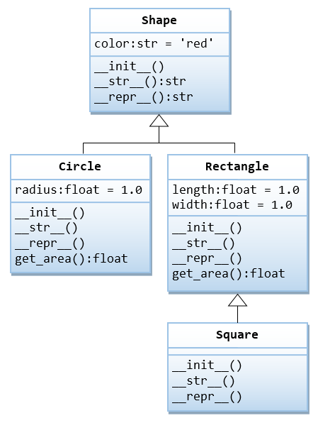

I assume that you are familiar with the OOP concepts (such as class and instance, composition, inheritance and polymorphism), and you know some OO languages such as Java/C++/C#. This article is not an introduction to OOP.
Python OOP Basics
OOP Basics
A class is a blueprint (or template) of entities (things) of the same kind. An instance is a particular realization of a class.
Unlike C++/Java, Python supports both class objects and instance objects. In fact, everything in Python is object, including class object.
An object contains attributes: data attributes (or static attribute or variables) and dynamic behaviors called methods. In UML diagram, objects are represented by 3-compartment boxes: name, data attributes and methods, as shown below:

To access an attribute, use "dot" operator in the form of class_name.attr_name or instance_name.attr_name.
To construct an instance of a class, invoke the constructor in the form of instance_name = class_name(args).

Example 1: Getting Started with a Circle class
Let's write a module called circle (to be saved as circle.py), which contains a Circle class. The Circle class shall contain a data attribute radius and a method get_area(), as shown in the following class diagram.
#!/usr/bin/env python3
# -*- coding: UTF-8 -*-
"""
circle.py: The circle module, which defines a Circle class.
"""
from math import pi
class Circle: # For Python 2 use: "class Circle(object):"
"""A Circle instance models a circle with a radius"""
def __init__(self, radius=1.0):
"""Initializer with default radius of 1.0"""
self.radius = radius # Create an instance variable radius
def __str__(self):
"""Return a descriptive string for this instance, invoked by print() and str()"""
return 'This is a circle with radius of {:.2f}'.format(self.radius)
def __repr__(self):
"""Return a formal string that can be used to re-create this instance, invoked by repr()"""
return 'Circle(radius={})'.format(self.radius)
def get_area(self):
"""Return the area of this Circle instance"""
return self.radius * self.radius * pi
# For Testing under Python interpreter
# If this module is run under Python interpreter, __name__ is '__main__'.
# If this module is imported into another module, __name__ is 'circle' (the module name).
if __name__ == '__main__':
c1 = Circle(2.1) # Construct an instance
print(c1) # Invoke __str__(): This is a circle with radius of 2.10
print(c1.get_area()) # 13.854423602330987
print(c1.radius) # 2.1
print(str(c1)) # Invoke __str__(): This is a circle with radius of 2.10
print(repr(c1)) # Invoke __repr__(): Circle(radius=2.1)
c2 = Circle() # Default radius
print(c2)
print(c2.get_area()) # Invoke member method
c2.color = 'red' # Create a new attribute for this instance via assignment
print(c2.color)
#print(c1.color) # Error - c1 has no attribute color
# Test doc-strings
print(__doc__) # This module
print(Circle.__doc__) # Circle class
print(Circle.get_area.__doc__) # get_area() method
print(isinstance(c1, Circle)) # True
print(isinstance(c2, Circle)) # True
print(isinstance(c1, str)) # FalseRun this script, and check the outputs:
This is a circle with radius of 2.10 13.854423602330987 2.1 This is a circle with radius of 2.10 Circle(radius=2.1) This is a circle with radius of 1.00 3.141592653589793 red circle.py: The circle module, which defines a Circle class. A Circle instance models a circle with a radius Return the area of this Circle instance True True False
How It Works?
- By convention, module names (and package names) are in lowercase (optionally joined with underscore if it improves readability). Class names are initial-capitalized (i.e., CamelCase). Variable and method names are also in lowercase.
Following the convention, this module is calledcircle(in lowercase) and is to be saved as "circle.py" (the module name is the filename - there is no explicit way to name a module). The class is calledCircle(in CamelCase). It contains a data attribute (instance variable)radiusand a methodget_area(). - class Circle: (Line 8): define the
Circleclass.
NOTES: In Python 2, you need to write "class Circle(object):" to create a so-called new-style class by inheriting from the default superclassobject. Otherwise, it will create a old-style class. The old-style classes should no longer be used. In Python 3, "class Circle:" inherits fromobjectby default. - self (Line 11, 15, 19, 23): The first parameter of all the member methods shall be an object called
self(e.g.,get_area(self),__init__(self, ...)), which binds to this instance (i.e., itself) during invocation. - You can invoke a method via the dot operator, in the form of
obj_name.method_name(). However, Python differentiates between instance objects and class objects:- For class objects: You can invoke a method via:
class_name.method_name(instance_name, ...)
where aninstance_nameis passed into the method as the argument'self'. - For instance objects: Python converts an instance method call from:
instance_name.method_name(...)
toclass_name.method_name(instance_name, ...)
where theinstance_nameis passed into the method as the argument'self'.
- For class objects: You can invoke a method via:
- Constructor __init__() (Line 11): You can construct an instance of a class by invoking its constructor, in the form of
class_name(...), e.g.,c1 = Circle(1.2) c2 = Circle() # radius defaultPython first creates a plainCircleobject. It then invokes theCircle's__init__(self, radius)withselfbound to the newly created instance, as follows:Circle.__init__(c1, 1.2) Circle.__init__(c2) # radius defaultInside the__init__()method, theself.radius = radiuscreates and attaches an instance variableradiusunder the instancesc1andc2.
Take note that:__init__()is not really the constructor, but an initializer to create the instance variables.__init__()shall never return a value.__init__()is optional and can be omitted if there is no instance variables.
- There is no need to declare instance variables. The variable assignment statements in
__init__()create the instance variables. - Once instance
c1was created, invocation of instance methodc1.get_area()(Line 33) is translated toCircle.getArea(c1)whereselfis bound toc1. Within the method,self.radiusis bound toc1.radius, which was created during the initialization. - You can dynamically add an attribute after an object is constructed via assignment, as in
c2.color='red'(Line 39). This is unlike other OOP languages like C++/Java. - You can place doc-string for module, class, and method immediately after their declaration. The doc-string can be retrieved via attribute
__doc__. Doc-strings are strongly recommended for proper documentation. - There is no "private" access control. All attributes are "public" and visible to all.
- [TODO] unit-test and doc-test
- [TODO] more
Inspecting the Instance and Class Objects
Run the circle.py script under the Python Interactive Shell. The script creates one class object Circle and two instance objects c1 and c2.
$ cd /path/to/module_directory
$ python3
>>> exec(open('circle.py').read())
......
>>> dir() # Return the list of names in the current local scope
['Circle', '__built-ins__', '__doc__', '__file__', '__loader__', '__name__',
'__package__', '__spec__', 'c1', 'c2', 'pi']
>>> __name__
'__main__'
# Inspect "instance" object c1
>>> dir(c1) # List all attributes including built-ins
['__class__', '__dict__', '__doc__', '__init__', '__str__', 'get_area', 'radius', ...]
>>> vars(c1) # Return a dictionary of instance variables kept in __dict__
{'radius': 2.1}
>>> c1.__dict__ # Same as vars(c1)
{'radius': 2.1}
>>> c1.__class__
<class '__main__.Circle'>
>>> type(c1) # Same as c1.__class__
<class '__main__.Circle'>
>>> c1.__doc__
'A Circle instance models a circle with a radius'
>>> c1.__module__
'__main__'
>>> c1.__init__
<bound method Circle.__init__ of Circle(radius=2.100000)>
>>> c1.__str__
<bound method Circle.__str__ of Circle(radius=2.100000)>
>>> c1.__str__() # or str(c1), or print(c1)
'This is a circle with radius of 2.10'
>>> c1.__repr__() # or repr(c1)
'Circle(radius=2.100000)'
>>> c1 # same as c1.__repr__()
Circle(radius=2.100000)
>>> c1.radius
2.1
>>> c1.get_area
<bound method Circle.get_area of Circle(radius=2.100000)>
>>> c1.get_area() # Same as Circle.get_area(c1)
13.854423602330987
# Inspect "instance" object c2
>>> dir(c2)
['color', 'get_area', 'radius', ...]
>>> type(c2) # or c2.__class__
<class '__main__.Circle'>
>>> vars(c2) # or c2.__dict__
{'radius': 1.0, 'color': 'red'}
>>> c2.radius
1.0
>>> c2.color
'red'
>>> c2.__init__
<bound method Circle.__init__ of Circle(radius=1.000000)>
# Inspect the "class" object Circle
>>> dir(Circle) # List all attributes for Circle object
['__class__', '__dict__', '__doc__', '__init__', '__str__', 'get_area', ...]
>>> help(Circle) # Show documentation
......
>>> Circle.__class__
<class 'type'>
>>> Circle.__dict__ # or vars(Circle)
mappingproxy({'__init__': ..., 'get_area': ..., '__str__': ..., '__dict__': ...,
'__doc__': 'A Circle instance models a circle with a radius', '__module__':
'__main__'})
>>> Circle.__doc__
'A Circle instance models a circle with a radius'
>>> Circle.__init__
<function Circle.__init__ at 0x7fb325e0cbf8>
>>> Circle.__str__
<function Circle.__str__ at 0x7fb31f3ee268>
>>> Circle.__str__(c1) # Same as c1.__str__() or str(c1) or print(c1)
'This is a circle with radius of 2.10'
>>> Circle.get_area
<function Circle.get_area at 0x7fb31f3ee2f0>
>>> Circle.get_area(c1) # Same as c1.get_area()
13.854423602330987
Class Objects vs Instance Objects
As illustrated in the above example, there are two kinds of objects in Python's OOP model: class objects and instance objects, which is quite different from other OOP languages (such as Java/C++).
Class objects provide default behavior and serve as factories for generating instance objects. Instance objects are the real objects created by your application. An instance object has its own namespace. It copies all the names from the class object from which it was created.
The class statement creates a class object of the given class name. Within the class definition, you can create class variables via assignment statements, which are shared by all the instances. You can also define methods, via the defs, to be shared by all the instances.
When an instance is created, a new namespace is created, which is initially empty. It clones the class object and attaches all the class attributes. The __init__() is then invoked to create (initialize) instance variables, which are only available to this particular instance.
[TODO] more
__str__() vs. __repr__()
The built-in functions print(obj) and str(obj) invoke obj.__str__() implicitly. If __str__() is not defined, they invoke obj.__repr__().
The built-in function repr(obj) invokes obj.__repr__() if defined; otherwise obj.__str__().
When you inspect an object (e.g., c1) under the interactive prompt, Python invokes obj.__repr__(). The default (inherited) __repr__() returns the obj's address.
The __str__() is used for printing an "informal" descriptive string of this object. The __repr__() is used to present an "official" (or canonical) string representation of this object, which should look like a valid Python expression that could be used to re-create the object (i.e., eval(repr(obj)) == obj). In our Circle class, repr(c1) returns 'Circle(radius=2.100000)'. You can use "c1 = Circle(radius=2.100000)" to re-create instance c1.
__str__() is meant for the users; while __repr__() is meant for the developers for debugging the program. All classes should have both the __str__() and __repr__().
You could re-direct __repr__() to __str__() (but not recommended) as follows:
def __repr__(self):
"""Return a formal string invoked by repr()"""
return self.__str__() # or Circle.__str__(self)
Import
Importing the circle module
When you use "import circle", a namespace for circle is created under the current scope. You need to reference the Circle class as circle.Circle.
$ cd /path/to/module_directory $ python3 >>> import circle # circle module >>> dir() # Current local scope ['__built-ins__', '__doc__', '__loader__', '__name__', '__package__', '__spec__', 'circle'] >>> dir(circle) # The circle module ['Circle', '__built-ins__', '__doc__', '__name__', 'pi', ...] >>> dir(circle.Circle) # Circle class ['__class__', '__doc__', '__init__', '__str__', 'get_area', ...] >>> __name__ # of current scope '__main__' >>> circle.__name__ # of circle module 'circle' >>> c1 = circle.Circle(1.2) >>> dir(c1) ['__class__', '__doc__', '__str__', 'get_area', 'radius', ...] >>> vars(c1) {'radius': 1.2}
Importing the Circle class of the circle module
When you import the Circle class via "from circle import Circle", the Circle class is added to the current scope, and you can reference the Circle class directly.
>>> from circle import Circle
>>> dir()
['Circle', '__built-ins__', '__doc__', '__loader__', '__name__', '__package__', '__spec__']
>>> c1 = Circle(3.4)
>>> vars(c1)
{'radius': 3.4}
Class Definition Syntax
The syntax is:
class class_name(superclass_1, ...):
"""Class doc-string"""
class_var_1 = value_1 # Class variables
......
def __init__(self, arg_1, ...):
"""Initializer"""
self.instance_var_1 = arg_1 # Attach instance variables by assignment
......
def __str__(self):
"""For printf() and str()"""
......
def __repr__(self):
"""For repr() and interactive prompt"""
......
def method_name(self, *args, **kwargs):
"""Method doc-string"""
......
Example 2: The Point class and Operator Overloading
In this example, we shall define a Point class, which models a 2D point with x and y coordinates. We shall also overload the operators '+' and '*' by overriding the so-called magic methods __add__() and __mul__().
#!/usr/bin/env python3
# -*- coding: UTF-8 -*-
"""
point.py: The point module, which defines the Point class
"""
class Point: # In Python 2, use: class Point(object):
"""A Point instance models a 2D point with x and y coordinates"""
def __init__(self, x = 0, y = 0):
"""Initializer, which creates the instance variables x and y with default of (0, 0)"""
self.x = x
self.y = y
def __str__(self):
"""Return a descriptive string for this instance"""
return '({}, {})'.format(self.x, self.y)
def __repr__(self):
"""Return a command string to re-create this instance"""
return 'Point(x={}, y={})'.format(self.x, self.y)
def __add__(self, right):
"""Override the '+' operator: create and return a new instance"""
p = Point(self.x + right.x, self.y + right.y)
return p
def __mul__(self, factor):
"""Override the '*' operator: modify and return this instance"""
self.x *= factor
self.y *= factor
return self
# Test
if __name__ == '__main__':
p1 = Point()
print(p1) # (0.00, 0.00)
p1.x = 5
p1.y = 6
print(p1) # (5.00, 6.00)
p2 = Point(3, 4)
print(p2) # (3.00, 4.00)
print(p1 + p2) # (8.00, 10.00) Same as p1.__add__(p2)
print(p1) # (5.00, 6.00) No change
print(p2 * 3) # (9.00, 12.00) Same as p1.__mul__(p2)
print(p2) # (9.00, 12.00) ChangedHow It Works?
- Python supports operator overloading (like C++ but unlike Java). You can overload
'+','-','*','/','//'and'%'by overriding member methods__add__(),__sub__(),__mul__(),__truediv__(),__floordiv__()and__mod__(), respectively. You can overload other operators too (to be discussed later). - In this example, the
__add__()returns a new instance; whereas the__mul__()multiplies into this instance and returns this instance, for academic purpose.
The getattr(), setattr(), hasattr() and delattr() Built-in Functions
You can access an object's attribute via the dot operator by hard-coding the attribute name, provided you know the attribute name in compile time.
For example, you can use：
- obj_name.attr_name: to read an attribute
- obj_name.attr_name = value: to write value to an attribute
- del obj_name.attr_name: to delete an attribute
Alternatively, you can use built-in functions like getattr(), setattr(), delattr(), hasattr(), by using a variable to hold an attribute name, which will be bound during runtime.
- hasattr(obj_name, attr_name) -> bool: returns
Trueif theobj_namecontains theatr_name. - getattr(obj_name, attr_name[, default]) -> value: returns the value of the
attr_nameof theobj_name, equivalent toobj_name.attr_name. If theattr_namedoes not exist, it returns thedefaultif present; otherwise, it raisesAttributeError. - setattr(obj_name, attr_name, attr_value): sets a value to the attribute, equivalent to
obj_name.attr_name = value. - delattr(obj_name, attr_name): deletes the named attribute, equivalent to
del obj_name.attr_name.
For example:
class MyClass:
"""This class contains an instance variable called myvar"""
def __init__(self, myvar):
self.myvar = myvar
myinstance = MyClass(8)
print(myinstance.myvar) #8
print(getattr(myinstance, 'myvar')) #8
print(getattr(myinstance, 'no_var', 'default')) #default
attr_name = 'myvar'
print(getattr(myinstance, attr_name)) # Using a variable
setattr(myinstance, 'myvar', 9) # Same as myinstance.myvar = 9
print(getattr(myinstance, 'myvar')) #9
print(hasattr(myinstance, 'myvar')) #True
delattr(myinstance, 'myvar')
print(hasattr(myinstance, 'myvar')) #False
Class Variable vs. Instance Variables
Class variables are shared by all the instances, whereas instance variables are specific to that particular instance.
class MyClass:
count = 0 # Total number of instances
# A class variable shared by all the instances
def __init__(self):
# Update class variable
self.__class__.count += 1 # Increment count
# or MyClass.count += 1
# Create instance variable: an 'id' of the instance in running numbers
self.id = self.__class__.count
def get_id(self):
return self.id
def get_count(self):
return self.__class__.count
if __name__ == '__main__':
print(MyClass.count) #0
myinstance1 = MyClass()
print(MyClass.count) #1
print(myinstance1.get_id()) #1
print(myinstance1.get_count()) #1
print(myinstance1.__class__.count) #1
myinstance2 = MyClass()
print(MyClass.count) #2
print(myinstance1.get_id()) #1
print(myinstance1.get_count()) #2
print(myinstance1.__class__.count) #2
print(myinstance2.get_id()) #2
print(myinstance2.get_count()) #2
print(myinstance2.__class__.count) #2
Private Variables?
Python does not support access control. In other words, all attributes are "public" and are accessible by ALL. There are no "private" attributes like C++/Java.
However, by convention:
- Names begin with an underscore
_are meant for internal use, and are not recommended to be accessed outside the class definition. - Names begin with double underscores
__and not end with double underscores are further hidden from direct access through name mangling (or rename). - Names begin and end with double underscores (such as
__init__,__str__,__add__) are special magic methods (to be discussed later).
For example,
class MyClass:
def __init__(self):
self.myvar = 1 # public
self._myvar = 2 # meant for internal use (private). 'Please' don't access directly
self.__myvar = 3 # name mangling
self.__myvar_ = 4 # name mangling
self.__myvar__ = 5 # magic attribute
def print(self):
# All variables can be used within the class definition
print(self.myvar)
print(self._myvar)
print(self.__myvar)
print(self.__myvar_)
print(self.__myvar__)
if __name__ == '__main__':
myinstance1 = MyClass()
print(myinstance1.myvar)
print(myinstance1._myvar)
# Variables beginning with __ are not accessible outside the class except those ending with __
#print(myinstance1.__myvar) # AttributeError
#print(myinstance1.__myvar_) # AttributeError
print(myinstance1.__myvar__)
myinstance1.print()
print(dir(myinstance1))
# ['_MyClass__myvar', '_MyClass__myvar_', '__myvar__', '_myvar', ...]
# Variables beginning with __ are renamed by prepending with an underscore and classname (called name mangling)
Class Method, Instance Method and Static Method
Class Method (Decorator @classmethod)
A class method belongs to the class and is a function of the class. It is declared with the @classmethod decorator. It accepts the class as its first argument. For example,
>>> class MyClass:
@classmethod
def hello(cls):
print('Hello from', cls.__name__)
>>> MyClass.hello()
Hello from MyClass
% Can be invoked via an instance too
>>> myinstance1 = MyClass()
>>> myinstance1.hello()
Instance Method
Instance methods are the most common type of method. An instance method is invoked by an instance object (and not a class object). It takes the instance (self) as its first argument. For example,
>>> class MyClass:
def hello(self):
print('Hello from', self.__class__.__name__)
>>> myinstance1 = MyClass()
>>> myinstance1.hello()
Hello from MyClass
>>> MyClass.hello() # Cannot invoke via a class object
TypeError: hello() missing 1 required positional argument: 'self'
>>> MyClass.hello(myinstance1) # But can explicitly pass an instance object
Hello from MyClass
Static Method (Decorator @staticmethod)
A static method is declared with a @staticmethod decorator. It "doesn't know its class" and is attached to the class for convenience. It does not depends on the state of the object and could be a separate function of a module. A static method can be invoked via a class object or instance object. For example,
>>> class MyClass:
@staticmethod
def hello():
print('Hello, world')
>>> myinstance1 = MyClass()
>>> myinstance1.hello()
Hello, world
>>> MyClass.hello() # Don't need argument self
Hello, world
Example 3: Getter and Setter
In this example, we shall rewrite the Circle class to access the instance variable via the getter and setter. We shall rename the instance variable to _radius (meant for internal use only or private), with "public" getter get_radius() and setter set_radius(), as follows:
#!/usr/bin/env python3
# -*- coding: UTF-8 -*-
"""circle.py: The circle module, which defines the Circle class"""
from math import pi
class Circle:
"""A Circle instance models a circle with a radius"""
def __init__(self, _radius = 1.0):
"""Initializer with default radius of 1.0"""
# Change from radius to _radius (meant for internal use)
# You should access through the getter and setter.
self.set_radius(_radius) # Call setter
def set_radius(self, _radius):
"""Setter for instance variable radius with input validation"""
if _radius < 0:
raise ValueError('Radius shall be non-negative')
self._radius = _radius
def get_radius(self):
"""Getter for instance variable radius"""
return self._radius
def get_area(self):
"""Return the area of this Circle instance"""
return self.get_radius() * self.get_radius() * pi # Call getter
def __repr__(self):
"""Return a command string to recreate this instance"""
# Used by str() too as __str__() is not defined
return 'Circle(radius={})'.format(self.get_radius()) # Call getter
if __name__ == '__main__':
c1 = Circle(1.2) # Constructor and Initializer
print(c1) # Invoke __repr__(). Output: Circle(radius=1.200000)
print(vars(c1)) # Output: {'_radius': 1.2}
print(c1.get_area()) # Output: 4.52389342117
print(c1.get_radius()) # Run Getter. Output: 1.2
c1.set_radius(3.4) # Test Setter
print(c1) # Output: Circle(radius=3.400000)
c1._radius = 5.6 # Access instance variable directly (NOT recommended but permitted)
print(c1) # Output: Circle(radius=5.600000)
c2 = Circle() # Default radius
print(c2) # Output: Circle(radius=1.000000)
c3 = Circle(-5.6) # ValueError: Radius shall be non-negativeHow It Works?
- While there is no concept of "private" attributes in Python, we could still rewrite our
Circleclass with "public" getter/setter, as in the above example. This is often done because the getter and setter need to carry out certain processing, such as data conversion in getter, or input validation in setter. - We renamed the instance variable
_radius(Line 9), with a leading underscore to denote it "private" (but it is still accessible to all). According to Python naming convention, names beginning with a underscore are to be treated as "private", i.e., it shall not be used outside the class. We named our "public" getter and setterget_radius()andset_radius(), respectively. - In the constructor, we invoke the setter to set the instance variable (Line 13), instead of assign directly, as the setter may perform tasks like input validation. Similarly, we use the getter in
get_area()(Line 27) and__repr__()(Line 32).
Example 4: Creating a property object via the property() Built-in Function
Add the following into the Circle class in the previous example:
class Circle:
......
# Add a new property object called radius, given its getter and setter
# Place this line after get_radius() and set_radius()
radius = property(get_radius, set_radius)
This creates a new property object (instance variable) called radius, with the given getter/setter (which operates on the existing instance variable _radius). Recall that we have renamed our instance variable to _radius, so they do not crash.
You can now use this new property radius, just like an ordinary instance variable, e.g.,
c1 = Circle(1.2) # Access (read/write) the new property radius directly print(c1.radius) # Run get_radius() to read _radius #1.2 c1.radius = 3.4 # Run set_radius() to change _radius print(c1.radius) # Run get_radius() to read _radius #3.4 print(vars(c1)) #{'_radius': 3.4} print(dir(c1)) #['_radius', 'get_radius', 'radius', 'set_radius', ...] # The existing instance variable _radius, getter and setter are still available c1._radius = 5.6 print(c1._radius) #5.6 c1.set_radius(7.8) print(c1.get_radius()) #7.8 print(type(c1.radius)) #<class 'float'> print(type(c1._radius)) #<class 'float'> print(type(Circle.radius)) #<class 'property'> print(type(Circle._radius)) #AttributeError: type object 'Circle' has no attribute '_radius'
The built-in function property() has the following signature:
property(fn_get=None, fn_set=None, fn_del=None, doc=None)
You can specify a delete function, as well as a doc-string. For example,
class Circle:
......
def del_radius(self):
del self._radius
radius = property(get_radius, set_radius, del_radius, "Radius of this circle")
More on property object
[TODO]
Example 5: Creating a property via the @property Decorator
In the above example, the statement:
radius = property(get_radius, set_radius, del_radius)
is equivalent to:
# Create an empty property, getter, setter and deleter set to None radius = property() # Assign getter, setter and deleter functions radius.getter(self.get_radius) radius.setter(self.set_radius) radius.deleter(self.del_radius)
These can be implemented via decorators @property, @varname.setter and @varname.deleter, respectively. For example,
#!/usr/bin/env python3
# -*- coding: UTF-8 -*-
"""circle.py: The circle module, which defines the Circle class"""
from math import pi
class Circle:
"""A Circle instance models a circle with a radius"""
def __init__(self, radius = 1.0):
"""Initializer with default radius of 1.0"""
self.radius = radius # Call decorated setter
@property
def radius(self):
"""Radius of this circle""" # doc-string here
# Define getter here
return self._radius # Read the hidden instance variable _radius
# Equivalent to:
# def get_radius(self):
# return self._radius
# radius = property(get_radius) # Define a property with getter
@radius.setter
def radius(self, radius):
"""Setter for instance variable radius with input validation"""
if radius < 0:
raise ValueError('Radius shall be non-negative')
self._radius = radius # Set a hidden instance variable _radius
@radius.deleter
def radius(self):
"""Deleter for instance variable radius"""
del self._radius # Delete the hidden instance variable _radius
def get_area(self):
"""Return the area of this Circle instance"""
return self.radius * self.radius * pi # Call decorated getter
def __repr__(self):
"""Self description for this Circle instance, used by print(), str() and repr()"""
return 'Circle(radius={})'.format(self.radius) # Call decorated getter
if __name__ == '__main__':
c1 = Circle(1.2)
print(c1) # Output: Circle(radius=1.200000)
print(vars(c1)) # Output: {'_radius': 1.2}
print(dir(c1)) # Output: ['_radius', 'radius', ...]]
c1.radius = 3.4 # Setter
print(c1.radius) # Getter. Output: 3.4
print(c1._radius) # hidden instance variable. Output: 3.4
#print(c1.get_radius()) # AttributeError: 'Circle' object has no attribute 'get_radius'
c2 = Circle() # Default radius
print(c2) # Output: Circle(radius=1.000000)
c3 = Circle(-5.6) # ValueError: Radius shall be non-negativeHow It Works?
- We use a hidden instance variable called
_radiusto store the radius, which is set in the setter, after input validation. - We renamed the getter from
get_radius()toradius, and used the decorator@propertyto decorate the getter. - We also renamed the setter from
set_radius()toradius, and use the decorator@radius.setterto decorate the setter. - [TODO] more
Inheritance and Polymorphism
Example 6: The Cylinder class as a subclass of Circle class
In this example, we shall define a Cylinder class, as a subclass of Circle. The Cylinder class shall inherit attributes radius and get_area() from the superclass Circle, and add its own attributes height and get_volume().

#!/usr/bin/env python3
# -*- coding: UTF-8 -*-
"""cylinder.py: The cylinder module, which defines the Cylinder class"""
from circle import Circle # Using the Circle class in the circle module
class Cylinder(Circle):
"""The Cylinder class is a subclass of Circle"""
def __init__(self, radius = 1.0, height = 1.0):
"""Initializer"""
super().__init__(radius) # Invoke superclass' initializer (Python 3)
# OR
# super(Cylinder, self).__init__(radius) (Python 2)
# Circle.__init__(self, radius) Explicit superclass class
self.height = height
def __str__(self):
"""Self Description for print() and str()"""
# If __str__ is missing in the subclass, print() will invoke the superclass version!
return 'Cylinder(radius={},height={})'.format(self.radius, self.height)
def __repr__(self):
"""Formal Description for repr()"""
# If __repr__ is missing in the subclass, repr() will invoke the superclass version!
return self.__str__() # re-direct to __str__() (not recommended)
def get_volume(self):
"""Return the volume of the cylinder"""
return self.get_area() * self.height # Inherited get_area()
# For testing
if __name__ == '__main__':
cy1 = Cylinder(1.1, 2.2) # Output: Cylinder(radius=1.10,height=2.20)
print(cy1) # Invoke __str__()
print(cy1.get_area()) # Use inherited superclass' method
print(cy1.get_volume()) # Invoke its method
print(cy1.radius)
print(cy1.height)
print(str(cy1)) # Invoke __str__()
print(repr(cy1)) # Invoke __repr__()
cy2 = Cylinder() # Default radius and height
print(cy2) # Output: Cylinder(radius=1.00,height=1.00)
print(cy2.get_area())
print(cy2.get_volume())
print(dir(cy1))
# ['get_area', 'get_volume', 'height', 'radius', ...]
print(Cylinder.get_area)
# <function Circle.get_area at 0x7f490436b378>
# Inherited from the superclass
print(Circle.get_area)
# <function Circle.get_area at 0x7f490436b378>
print(issubclass(Cylinder, Circle)) # True
print(issubclass(Circle, Cylinder)) # False
print(isinstance(cy1, Cylinder)) # True
print(isinstance(cy1, Circle)) # True (A subclass object is also a superclass object)
print(Cylinder.__base__) # Show superclass: <class 'circle.Circle'>
print(Circle.__subclasses__()) # Show a list of subclasses: [<class '__main__.Cylinder'>]
c1 = Circle(3.3)
print(c1) # Output: This is a circle with radius of 3.30
print(isinstance(c1, Circle)) # True
print(isinstance(c1, Cylinder)) # False (A superclass object is NOT a subclass object)How It Works?
- When you construct a new instance of
Cylindervia:cy1 = Cylinder(1.1, 2.2)
Python first creates a plainCylinderobject and invokes theCylinder's__init__()withselfbinds to the newly createdcy1, as follows:Cylinder.__init__(cy1, 1.1, 2.2)
Inside the__init__(), thesuper().__init__(radius)invokes the superclass'__init__(). (You can also explicitly callCircle.__init__(self, radius)but you need to hardcode the superclass' name.) This creates a superclass instance withradius. The next statementself.height = heightcreates the instance variableheightforcy1.
Take note that Python does not call the superclass' constructor automatically (unlike Java/C++). - If
__str__()or__repr__()is missing in the subclass,str()andrepr()will invoke the superclass version. Try commenting out__str__()and__repr__()and check the results.
super()
There are two ways to invoke a superclass method:
- via explicit classname: e.g.,
Circle.__init__(self) Circle.get_area(self)
- via
super(): e.g.,super().__init__(radius) # Python 3 super(Cylinder, self).__init__(radius) # Python 2: super(this_class_name, self) super().get_area() # Python 3 super(Cylinder, self).get_area() # Python 2
You can avoid hard-coding the superclass' name with super(). This is recommended, especially in multiple inheritance as it can resolve some conflicts (to be discussed later).
The super() method returns a proxy object that delegates method calls to a parent or sibling class. This is useful for accessing inherited methods that have been overridden in a class.
Example 7: Method Overriding
In this example, we shall override the get_area() method to return the surface area of the cylinder. We also rewrite the __str__() method, which also overrides the inherited method. We need to rewrite the get_volume() to use the superclass' get_area(), instead of this class.

#!/usr/bin/env python3
# -*- coding: UTF-8 -*-
"""cylinder.py: The cylinder module, which defines the Cylinder class"""
from math import pi
from circle import Circle # Using the Circle class in the circle module
class Cylinder(Circle):
"""The Cylinder class is a subclass of Circle"""
def __init__(self, radius = 1.0, height = 1.0):
"""Initializer"""
super().__init__(radius) # Invoke superclass' initializer
self.height = height
def __str__(self):
"""Self Description for print() and str()"""
return 'Cylinder({}, height={})'.format(super().__repr__(), self.height)
# Use superclass' __repr__()
def __repr__(self):
"""Formal Description for repr()"""
return self.__str__() # re-direct to __str__() (not recommended)
# Override
def get_area(self):
"""Return the surface area the cylinder"""
return 2.0 * pi * self.radius * self.height
def get_volume(self):
"""Return the volume of the cylinder"""
return super().get_area() * self.height # Use superclass' get_area()
# For testing
if __name__ == '__main__':
cy1 = Cylinder(1.1, 2.2)
print(cy1) # Invoke __str__(): Cylinder(Circle(radius=1.1), height=2.2)
print(cy1.get_area()) # Invoke overridden version
print(cy1.get_volume()) # Invoke its method
print(cy1.radius)
print(cy1.height)
print(str(cy1)) # Invoke __str__()
print(repr(cy1)) # Invoke __repr__()
cy2 = Cylinder() # Default radius and height
print(cy2) # Invoke __str__(): Cylinder(Circle(radius=1.0), height=1.0)
print(cy2.get_area())
print(cy2.get_volume())
print(dir(cy1))
# ['get_area', 'get_volume', 'height', 'radius', ...]
print(Cylinder.get_area)
# <function Cylinder.get_area at 0x7f505f464488>
print(Circle.get_area)
# <function Circle.get_area at 0x7f490436b378>- In Python, the overridden version replaces the inherited version, as shown in the above function references.
- To access superclass' version of a method, use:
- For Python 3:
super().method_name(*args), e.g.,super().get_area() - For Python 2:
super(this_class, self).method_name(*args), e.g.,super(Cylinder, self).get_area() - Explicitly via the class name:
superclass.method-name(self, *args), e.g.,Circle.get_area(self)
- For Python 3:
Example 8: Shape and its subclasses

#!/usr/bin/env python3
# -*- coding: UTF-8 -*-
"""sh.py: The sh module. It contains a superclass Shape and 3 subclasses Circle, Rectangle and Square"""
from math import pi
class Shape:
"""The superclass Shape with a color"""
def __init__(self, color = 'red'):
"""Initializer"""
self.color = color
def __str__(self):
"""Self description for print() and str()"""
return 'Shape(color={})'.format(self.color)
def __repr__(self):
"""Representative description for repr()"""
return self.__str__() # re-direct to __str__() (not recommended)
class Circle(Shape):
"""The Circle class: a subclass of Shape with a radius"""
def __init__(self, radius = 1.0, color = 'red'):
"""Initializer"""
super().__init__(color) # Call superclass' initializer
self.radius = radius
def __str__(self):
"""Self description for print() and str()"""
return 'Circle({}, radius={})'.format(super().__str__(), self.radius)
def __repr__(self):
"""Representative description for repr()"""
return self.__str__() # re-direct to __str__() (not recommended)
def get_area(self):
return self.radius * self.radius * pi
class Rectangle(Shape):
"""The Rectangle class: a subclass of Shape wit a length and width"""
def __init__(self, length = 1.0, width = 1.0, color = 'red'):
"""Initializer"""
super().__init__(color)
self.length = length
self.width = width
def __str__(self):
"""Self description for print() and str()"""
return 'Rectangle({}, length={}, width={})'.format(super().__str__(), self.length, self.width)
def __repr__(self):
"""Representative description for repr()"""
return self.__str__() # re-direct to __str__() (not recommended)
def get_area(self):
return self.length * self.width
class Square(Rectangle):
"""The Square class: a subclass of Rectangle having the same length and width"""
def __init__(self, side = 1.0, color = 'red'):
"""Initializer"""
super().__init__(side, side, color)
def __str__(self):
"""Self description for print() and str()"""
return 'Square({})'.format(super().__str__())
# For Testing
if __name__ == '__main__':
s1 = Shape('orange')
print(s1) # Shape(color=orange)
print(s1.color) # orange
print(str(s1)) # Shape(color=orange)
print(repr(s1)) # Shape(color=orange)
c1 = Circle(1.2, 'orange')
print(c1) # Circle(Shape(color=orange), radius=1.2)
print(c1.get_area()) # 4.523893421169302
print(c1.color) # orange
print(c1.radius) # 1.2
print(str(c1)) # Circle(Shape(color=orange), radius=1.2)
print(repr(c1)) # Circle(Shape(color=orange), radius=1.2)
r1 = Rectangle(1.2, 3.4, 'orange')
print(r1) # Rectangle(Shape(color=orange), length=1.2, width=3.4)
print(r1.get_area()) # 4.08
print(r1.color) # orange
print(r1.length) # 1.2
print(r1.width) # 3.4
print(str(r1)) # Rectangle(Shape(color=orange), length=1.2, width=3.4)
print(repr(r1)) # Rectangle(Shape(color=orange), length=1.2, width=3.4)
sq1 = Square(5.6, 'orange')
print(sq1) # Square(Rectangle(Shape(color=orange), length=5.6, width=5.6))
print(sq1.get_area()) # 31.359999999999996
print(sq1.color) # orange
print(sq1.length) # 5.6
print(sq1.width) # 5.6
print(str(sq1)) # Square(Rectangle(Shape(color=orange), length=5.6, width=5.6))
print(repr(sq1)) # Square(Rectangle(Shape(color=orange), length=5.6, width=5.6))Multiple Inheritance
Python supports multiple inheritance, which is defined in the form of "class class_name(base_class_1, base_class_2,...):".
Mixin Pattern
The simplest and most useful pattern of multiple inheritance is called mixin. A mixin is a superclass that is not meant to exist on its own, but meant to be inherited by some sub-classes to provide extra functionality.
[TODO]
Diamond Problem
Suppose that two classes B and C inherit from a superclass A, and D inherits from both B and C. If A has a method called m(), and m() is overridden by B and/or C, then which version of m() is inherited by D?
Let's look at Python's implementation.
Example 1
class A:
def m(self):
print('in Class A')
class B(A):
def m(self):
print('in Class B')
class C(A):
def m(self):
print('in Class C')
# Inherits from B, then C. It does not override m()
class D1(B, C):
pass
# Different order of subclass list
class D2(C, B):
pass
# Override m()
class D3(B, C):
def m(self):
print('in Class D3')
if __name__ == '__main__':
x = D1()
x.m() # 'in Class B' (first in subclass list)
x = D2()
x.m() # 'in Class C' (first in subclass list)
x = D3()
x.m() # 'in Class D3' (overridden version)
Example 2
Suppose the overridden m() in B and C invoke A's m() explicitly.
class A:
def m(self):
print('in Class A')
class B(A):
def m(self):
A.m(self)
print('in Class B')
class C(A):
def m(self):
A.m(self)
print('in Class C')
class D(B, C):
def m(self):
B.m(self)
C.m(self)
print('in Class D')
if __name__ == '__main__':
x = D()
x.m()
The output is:
in Class A in Class B in Class A in Class C in Class D
Take note that A's m() is run twice, which is typically not desired. For example, suppose that m() is the __init__(), then A will be initialized twice.
Example 3: Using super()
class A:
def m(self):
print('in Class A')
class B(A):
def m(self):
super().m()
print('in Class B')
class C(A):
def m(self):
super().m()
print('in Class C')
class D(B, C):
def m(self):
super().m()
print('in Class D')
if __name__ == '__main__':
x = D()
x.m()
in Class A in Class C in Class B in Class D
With super(), A's m() is only run once. This is because super() uses the so-called Method Resolution Order (MRO) to linearize the superclass. Hence, super() is strongly recommended for multiple inheritance, instead of explicit class call.
Example 4: Let's look at __init__()
class A:
def __init__(self):
print('init A')
class B(A):
def __init__(self):
super().__init__()
print('init B')
class C(A):
def __init__(self):
super().__init__()
print('init C')
class D(B, C):
def __init__(self):
super().__init__()
print('init D')
if __name__ == '__main__':
d = D()
# init A
# init C
# init B
# init D
c = C()
# init A
# init C
b = B()
# init A
# init B
Each superclass is initialized exactly once, as desired.
You can check the MRO via the mro() member method:
>>> D.mro() [<class '__main__.D'>, <class '__main__.B'>, <class '__main__.C'>, <class '__main__.A'>, <class 'object'>] >>> C.mro() [<class '__main__.C'>, <class '__main__.A'>, <class 'object'>] >>> B.mro() [<class '__main__.B'>, <class '__main__.A'>, <class 'object'>]
Abstract Methods
An abstract method has no implementation, and therefore cannot be called. The subclasses shall override the abstract methods inherited and provides their own implementations.
In Python 3, you can use decorator @abstractmethod to mark an abstract method. For example,
@abstractmethod
def method_name(self, ...):
pass
[TODO] more
Polymorphism
Polymorphism in OOP is the ability to present the same interface for differing underlying implementations. For example, a polymorphic function can be applied to arguments of different types, and it behaves differently depending on the type of the arguments to which they are applied.
Python is implicitly polymorphic, as type are associated with objects instead of variable references.
[TODO] more
Advanced OOP in Python
Magic Methods
A magic method is an object's member methods that begins and ends with double underscore, e.g., __init__(), __str__(), __repr__(), __add__(), __len__().
As an example, we list the magic methods in the int class:
>>> dir(int) ['__abs__', '__add__', '__and__', '__bool__', '__ceil__', ...]
In Python, built-in operators and functions invoke the corresponding magic methods. For example, operator '+' invokes __add__(), built-in function len() invokes __len__(). Even though the magic methods are invoked implicitly via built-in operators and functions, you can also call them explicitly, e.g., 'abc'.__len__() is the same as len('abc').
The following table summarizes the commonly-used magic methods and their invocation.
| Magic Method | Invoked Via | Invocation Syntax |
|---|---|---|
__lt__(self, right) |
Comparison Operators | self < right |
__add__(self, right) |
Arithmetic Operators | self + right |
__and__(self, right) |
Bitwise Operators | self & right |
__str__(self) |
Built-in Function Call | str(self), print(self) |
__len__(self) |
Sequence Operators & Built-in Functions | len(self) |
__int__(self) |
Type Conversion Built-in Function Call | int(self) |
__init__(self, *args) |
Constructor / Initializer | x = ClassName(*args) |
__del__(self) |
Operator del |
del x |
__index__(self) |
Convert this object to an index | x[self] |
__radd__(self, left) |
RHS (Reflected) addition, subtraction, etc. | left + self |
__iadd__(self, right) |
In-place addition, subtraction, etc | self += right |
__pos__(self) |
Unary Positive and Negate operators | +self |
__round__(self) |
Function Call | round(self) |
__getattr__(self, name) |
Object's attributes | self.name |
__call__(self, *args, **kwargs) |
Callable Object | obj(*args, **kwargs); |
__enter__(self), __exit__(self) |
Context Manager with-statement |
Construction and Initialization
When you use x = ClassName(*args) to construct an instance of x, Python first calls __new__(cls, *args) to create an instance, it then invokes __init__(self, *args) (the initializer) to initialize the instance.
Operator Overloading
Python supports operators overloading (like C++) via overriding the corresponding magic functions.
Example
To Override the '==' operator for the Circle class:
class Circle:
def __init__(self, radius):
"""Initializer"""
self.radius = radius
def __eq__(self, right):
"""Override operator '==' to compare the two radius"""
if self.__class__.__name__ == right.__class__.__name__: # Check class type
return self.radius == right.radius # Compare radius
raise TypeError("not a 'Circle' object")
if __name__ == '__main__':
print(Circle(8) == Circle(8)) # True
print(Circle(8) == Circle(88)) # False
print(Circle(8) == 'abc') # TypeError
[TODO] more examples
Iterable and Iterator: iter() and next()
Python iterators are supported by two magic member methods: __iter__(self) and __next__(self).
- The Iterable object (such as list) shall implement the
__iter__(self)member method to return an iterator object. This method can be invoked explicitly via "iterable.__iter__()", or implicitly via "iter(iterable)" or "for item in iterable" loop. - The returned iterator object shall implement the
__next__(self)method to return the next item, or raiseStopIerationif there is no more item. This method can be invoked explicitly via "iterator.__next__()", or implicitly via "next(iterator)" or within the "for item in iterable" loop.
Example 1:
A list is an iterable that supports iterator.
# Using iter() and next() built-in functions >>> lst_itr = iter([11, 22, 33]) # Get an iterator from a list >>> lst_itr <list_iterator object at 0x7f945e438550> >>> next(lst_itr) 11 >>> next(lst_itr) 22 >>> next(lst_itr) 33 >>> next(lst_itr) # No more item, raise StopIteration ...... StopIteration # Using __iter__() and __next__() member methods >>> lst_itr2 = [44, 55].__iter__() >>> lst_itr2 <list_iterator object at 0x7f945e4385f8> >>> lst_itr2.__next__() 44 >>> lst_itr2.__next__() 55 >>> lst_itr2.__next__() StopIteration # The "for each in iterable" loop uses iterator implicitly >>> for item in [11, 22, 33]: print(item)
Example 2:
Let's implement our own iterator. The following RangeDown(min, max) is similar to range(min, max + 1), but counting down. In this example, the iterable and iterator are in the same class.
class RangeDown:
"""Iterator from max down to min (both inclusive)"""
def __init__(self, min, max):
self.current = max + 1
self.min = min
def __iter__(self):
return self
def __next__(self):
self.current -= 1
if self.current < self.min:
raise StopIteration
else:
return self.current
if __name__ == '__main__':
# Use iter() and next()
itr = iter(RangeDown(6, 8))
print(next(itr)) # 8
print(next(itr)) # 7
print(next(itr)) # 6
#print(next(itr)) # StopIteration
# Iterate in for-in loop
for i in RangeDown(6, 8):
print(i, end=" ") # 8 7 6
print()
# Use __iter__() and __next__()
itr2 = RangeDown(9, 10).__iter__()
print(itr2.__next__()) # 10
print(itr2.__next__()) # 9
print(itr2.__next__()) # StopIteration
Example 3:
Let's separate the iterable and iterator in two classes.
class RangeDown:
"""Iterable from max down to min (both inclusive)"""
def __init__(self, min, max):
self.min = min
self.max = max
def __iter__(self):
return RangeDownIterator(self.min, self.max)
class RangeDownIterator:
def __init__(self, min, max):
self.min = min
self.current = max + 1
def __next__(self):
self.current -= 1
if self.current < self.min:
raise StopIteration
else:
return self.current
if __name__ == '__main__':
itr = iter(RangeDown(6, 8))
print(next(itr)) # 8
print(next(itr)) # 7
print(next(itr)) # 6
#print(next(itr)) # StopIteration
Generator and yield
A generator function is a function that can produce a sequence of results instead of a single value. A generator function returns a generator iterator object, which is a special type of iterator where you can obtain the next elements via next().
A generator function is like an ordinary function, but instead of using return to return a value and exit, it uses yield to produce a new result. A function which contains yield is automatically a generator function.
Generators are useful to create iterators.
Example 1: A Simple Generator
>>> def my_simple_generator():
yield(11)
yield(22)
yield(33)
>>> g1 = my_simple_generator()
>>> g1
<generator object my_simple_generator at 0x7f945e441990>
>>> next(g1)
11
>>> next(g1)
22
>>> next(g1)
33
>>> next(g1)
......
StopIteration
>>> for item in my_simple_generator(): print(item, end=' ')
11 22 33
Example 2
The following generator function range_down(min, max) implements the count-down version of range(min, max+1).
>>> def range_down(min, max): """A generator function contains yield statement and creates a generator iterator object""" current = max while current >= min: yield current # Produce a result each time it is run current -= 1 # Count down >>> range_down(5, 8) <generator object range_down at 0x7f5e34fafc18> # A generator function returns a generator object # Using the generator in the for-in loop >>> for i in range_down(5, 8): print(i, end=" ") # 8 7 6 5 # Using iter() and next() >>> itr = range_down(2, 4) # or iter(range_down(2, 4)) >>> itr <generator object range_down at 0x7f230d53a168> >>> next(itr) 4 >>> next(itr) 3 >>> next(itr) 2 >>> next(itr) StopIteration # Using __iter__() and __next__() >>> itr2 = range_down(5, 6).__iter__() >>> itr2 <generator object range_down at 0x7f230d53a120> >>> itr2.__next__() 6 >>> itr2.__next__() 5 >>> itr2.__next__() StopIteration
Each time the yield statement is run, it produce a new value, and updates the state of the generator iterator object.
Example 3
We can have generators which produces infinite value.
from math import sqrt, ceil
def gen_primes(number):
"""A generator function to generate prime numbers, starting from number"""
while True: # No upperbound!
if is_prime(number):
yield number
number += 1
def is_prime(number:int) -> int:
if number <= 1:
return False
factor = 2
while (factor <= ceil(sqrt(number))):
if number % factor == 0: return False
factor += 1
return True
if __name__ == '__main__':
g = gen_primes(8) # From 8
for i in range(100): # Generate 100 prime numbers
print(next(g))
Generator Expression
A generator expression has a similar syntax as a list/dictionary comprehension (for generating a list/dictionary), but surrounded by braces and produce a generator iterator object. (Note: braces are used by tuples, but they are immutable and thus cannot be comprehended.) For example,
>>> a = (x*x for x in range(1,5)) >>> a <generator object <genexpr> at 0x7f230d53a2d0> >>> for item in a: print(item, end=' ') 1 4 9 16 >>> sum(a) # Applicable to functions that consume iterable 30 >>> b = (x*x for x in range(1, 10) if x*x % 2 == 0) >>> for item in b: print(item, end=' ') 4 16 36 64 # Compare with list/dictionary comprehension for generating list/dictionary >>> lst = [x*x for x in range(1, 10)] >>> lst [1, 4, 9, 16, 25, 36, 49, 64, 81] >>> dct = {x:x*x for x in range(1, 10)} >>> dct {1: 1, 2: 4, 3: 9, 4: 16, 5: 25, 6: 36, 7: 49, 8: 64, 9: 81}
Callable: __call__()
In Python, you can call an object to execute some codes, just like calling a function. This is done by providing a __call__() member method. For example,
class MyCallable:
def __init__(self, value):
self.value = value
def __call__(self):
return 'The value is %s' % self.value
if __name__ == '__main__':
# Construct an instance
obj = MyCallable(88)
# Call the instance, invoke __call__()
print(obj()) # Output: The value is 88
Context Manager: __enter__() and __exit__()
[TODO]
Unit Testing
Testing is CRTICALLY IMPORTANT in software development. Some people actually advocate "Write Test First (before writing the codes)" (in so called Test-Driven Development (TDD)). You should at least write your tests alongside your development.
In python, you can carry out unit testing via built-in modules unittest and doctest.
unittest Module
The unittest module supports all features needed to run unit tests:
- Test Case: contains a set of test methods, supported by
testunit.TestCaseclass. - Test Suite: a collection of test cases, or test suites, or both; supported by
testunit.TestSuiteclass. - Test Fixture: Items and preparations needed to run a test; supported via the
setup()andtearDown()methods inunittest.TestCaseclass. - Test Runner: run the tests and report the results; supported via
unittest.TestRunner,unittest.TestResult, etc.
Example 1: Writing Test Case
#!/usr/bin/env python3 # -*- coding: UTF-8 -*- """ unittest_eg1.py: Unit test example """ import unittest # Define a function to be unit-tested def my_sum(a, b): """Return a + b""" return a + b # Define a test case, which consists of a set of test methods. class TestMySum(unittest.TestCase): # subclass of TestCase def test_positive_inputs(self): result = my_sum(8, 80) self.assertEqual(result, 88) def test_negative_inputs(self): result = my_sum(-9, -90) self.assertEqual(result, -99) def test_mixed_inputs(self): result = my_sum(8, -9) self.assertEqual(result, -1) def test_zero_inputs(self): result = my_sum(0, 0) self.assertEqual(result, 0) # Run the test cases in this module if __name__ == '__main__': unittest.main()
The expected outputs are:
.... ---------------------------------------------------------------------- Ran 4 tests in 0.001s OK
How It Works?
- You can create a test case by sub-classing
unittest.TestCase. - A test case contains test methods. The test method names shall begin with
test. - You can use the generic
assertstatement to compare the test result with the expected result:assert test, [msg] # if test is True, do nothing; else, raise AssertError with the message - You can also use the
assertXxx()methods provided byunittest.TestCaseclass. These method takes an optional argumentmsgthat holds a message to be display if assertion fails. For examples,assertEqual(a, b, [msg]):a == bassertNotEqual(a, b, [msg]):a != bassertTrue(a, [msg]):bool(x)isTrueassertFalse(a, [msg]):bool(x)isFalseassertIsNone(expr, [msg]):x is NoneassertIsNotNone(expr, [msg]):x is not NoneassertIn(a, b, [msg]):a in bassertNotIn(a, b, [msg]):a not in bassertIs(obj1, obj2, [msg]):obj1 is obj2assertIsNot(obj1, obj2, [msg]):obj1 is not obj2assertIsInstance(obj, cls, [msg]):isinstance(obj, cls)assertIsNotInstance(obj, cls, [msg]):not isinstance(obj, cls)assertGreater(a, b, [msg]):a > bassertLess(a, b, [msg]):a < bassertGreaterEqual(a, b, [msg]):a >= bassertLessEqual(a, b, [msg]):a <= bassertAlmostEqual(a, b, [msg]):round(a-b, 7) == 0assertNotAlmostEqual(a, b, [msg]):round(a-b, 7) != 0assertRegex(text, regex, [msg]):regex.search(text)assertNotRegex(text, regex, [msg]):not regex.search(text)assertDictEqual(a, b, [msg]):assertListEqual(a, b, [msg]):assertTupleEqual(a, b, [msg]):assertSetEqual(a, b, [msg]):assertSequenceEqual(a, b, [msg]):assertItemsEqual(a, b, [msg]):assertDictContainsSubset(a, b, [msg]):assertRaises(except, func, *args, **kwargs):func(*args, **kwargs)raisesexcept- Many more, see the
unittestAPI documentation.
- Test cases and test methods run in alphanumeric order.
Example 2: Setting up Test Fixture
You can setup your test fixtures, which are available to all the text methods, via setUp(), tearDown(), setUpClass() and tearDownClass() methods. The setUp() and tearDown() will be executed before and after EACH test method; while setUpClass() and tearDownClass() will be executed before and after ALL test methods in this test class.
For example,
#!/usr/bin/env python3 # -*- coding: UTF-8 -*- """ ut_template.py: Unit test template """ import unittest class MyTestClass(unittest.TestCase): # Run before ALL test methods in this class. @classmethod def setUpClass(cls): print('run setUpClass()') # Run after ALL test methods in this class. @classmethod def tearDownClass(cls): print('run tearDownClass()') # Run before EACH test method. def setUp(self): print('run setUp()') # Run after EACH test method. def tearDown(self): print('run tearDown()') # A test method def test_numbers_equal(self): print('run test_numbers_equal()') self.assertEqual(8, 8) # Another test method def test_numbers_not_equal(self): print('run test_numbers_not_equal()') self.assertNotEqual(8, -8) # Run the test cases in this module if __name__ == '__main__': unittest.main()
The expected outputs are:
Finding files... done. Importing test modules ... done. run setUpClass() run setUp() run test_numbers_equal() run tearDown() run setUp() run test_numbers_not_equal() run tearDown() run tearDownClass() ---------------------------------------------------------------------- Ran 2 tests in 0.001s OK
[TODO] An Example to setup text fixtures for each test method.
Example 3: Using Test Suite
You can organize your test cases into test suites. For example,
# Define a test suite with selected test methods from test cases def my_suite1(): suite = unittest.TestSuite() suite.addTest(MyTestCase('test_method1')) # add a test method suite.addTest(MyTestCase('test_method2')) return suite # Or, generate test suite for all testXxx() methods of a test case my_suite2 = unittest.TestLoader().loadTestsFromTestCase(MyTestCase) # Run test suites if __name__ == "__main__": runner = unittest.TextTestRunner() # Use a text-based TestRunner runner.run(my_suite1()) runner.run(my_suite2)
Skipping Tests
Use unittest.skip([msg]) decorator to skip one test, e.g.,
@unittest.skip('msg') # decorator to skip this test
def test_x():
......
Invoke instance method skipTest([msg]) inside the test method to skip the test, e.g.,
def test_x():
self.skipTest() # skip this test
......
You can use decorator unittest.skipIf(condition, [msg]), @unittest.skipUnless(condition, [msg]), for conditional skip.
Fail Test
To fail a test, use instance method fail([msg]).
doctest Module
Embed the test input/output pairs in the doc-string, and invoke doctest.testmod(). For example,
#!/usr/bin/env python3 # -*- coding: UTF-8 -*- import doctest # Define a function to be unit-tested def my_sum(a, b): """ (number, number) -> number Return a + b For use by doctest: >>> my_sum(8, 80) 88 >>> my_sum(-9, -90) -99 >>> my_sum(8, -9) -1 >>> my_sum(0, 0) 0 """ return a + b if __name__ == '__main__': doctest.testmod(verbose=1)
Study the outputs:
Trying:
my_sum(8, 80)
Expecting:
88
ok
Trying:
my_sum(-9, -90)
Expecting:
-99
ok
Trying:
my_sum(8, -9)
Expecting:
-1
ok
Trying:
my_sum(0, 0)
Expecting:
0
ok
1 items had no tests:
__main__
1 items passed all tests:
4 tests in __main__.my_sum
4 tests in 2 items.
4 passed and 0 failed.
Test passed.
The "(number, number) -> number" is known as type contract, which spells out the expected types of the parameters and return value.
Performance Measurement
You can use modules timeit, profile and pstats for profiling Python program and performance measurements.
[TODO] examples
You could measure code coverage via coverage module.
[TODO] examples
REFERENCES & RESOURCES
- The Python's mother site @ www.python.org; "The Python Documentation" @ https://www.python.org/doc/; "The Python Tutorial" @ https://docs.python.org/tutorial/; "The Python Language Reference" @ https://docs.python.org/reference/.